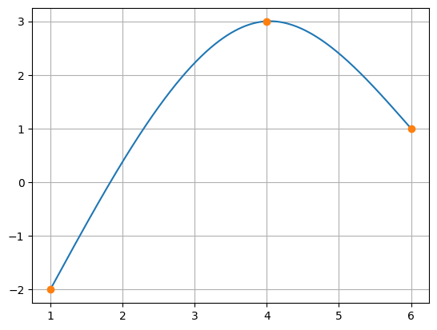

import numpy as np
a = np.array([[1,1,1,1,0,0,0,0],[1,4,16,64,0,0,0,0],[0,0,0,0,1,4,16,64],[0,0,0,0,1,6,36,216],[0,1,8,48,0,-1,-8,-48],[0,0,2,24,0,0,-2,-24],[0,0,2,6,0,0,0,0],[0,0,0,0,0,0,2,36]])
b = np.array([-2,3,3,1,0,0,0,0])
a00, a01, a02, a03, a10, a11, a12, a13 = np.linalg.solve(a,b)Solución Punto 01
Los datos describen dos intervalos de estudio \(\left[1,4\right]\) y \(\left[4,6\right]\). Bajo esta consideración se tiene que:
\[ \begin{align*} \left[1,4\right] & : & s_0\left(x\right) = a_{0,0} + a_{0,1} x + a_{0,2}x^2 + a_{0,3}x^3\\ \left[4,6\right] & : & s_1\left(x\right) = a_{1,0} + a_{1,1} x + a_{1,2}x^2 + a_{1,3}x^3 \end{align*} \]
Para construir los trazadores cúbicos, se deben tener en cuenta las primeras \(\dot{s}_i\left(x\right)\) y segundas \(\ddot{s}_i\left(x\right)\) derivadas de cada función en todos los intervalos. Las expresiones de las primeras derivadas son:
\[ \begin{align*} \left[1,4\right] & : & \dot{s}_0\left(x\right) = a_{0,1} + 2 a_{0,2}x + 3 a_{0,3}x^2\\ \left[4,6\right] & : & \dot{s}_1\left(x\right) = a_{1,1} + 2 a_{1,2}x + 3 a_{1,3}x^2 \end{align*} \]
Las expresiones para la segunda derivadas son:
\[ \begin{align*} \left[1,4\right] & : & \ddot{s}_0\left(x\right) = 2 a_{0,2} + 6 a_{0,3}x\\ \left[4,6\right] & : & \ddot{s}_1\left(x\right) = 2 a_{1,2} + 6 a_{1,3}x \end{align*} \]
Para determinar los trazadores se deben cumplir las siguientes condiciones:
Condición de interpolación
\[ \begin{align*} s_0\left(1\right) & = & -2\\ s_0\left(4\right) & = & 3\\ s_1\left(4\right) & = & 3\\ s_1\left(6\right) & = & 1 \end{align*} \]
Reemplazando las ecuaciones se tiene que:
\[ \begin{align*} s_0\left(1\right) & = & -2 & = & a_{0,0} + a_{0,1} + a_{0,2} + a_{0,3}\\ s_0\left(4\right) & = & 3 & = & a_{0,0} + 4 a_{0,1} + 16 a_{0,2} + 64 a_{0,3}\\ s_1\left(4\right) & = & 3 & = & a_{1,0} + 4 a_{1,1} + 16 a_{1,2} + 64 a_{1,3}\\ s_1\left(6\right) & = & 1 & = & a_{1,0} + 6 a_{1,1} + 36 a_{1,2} + 216 a_{1,3} \end{align*} \]
Condición de la primera derivada
$$ \[\begin{align*} \dot{s}_0\left( 4 \right) = \dot{s}_1\left( 4 \right) \\ a_{0,1} + 8 a_{0,2} + 48 a_{0,3} = a_{1,1} + 8 a_{1,2} + 48 a_{1,3}\\ a_{0,1} + 8 a_{0,2} + 48 a_{0,3} - a_{1,1} - 8 a_{1,2} - 48 a_{1,3} = 0 \\ \end{align*}\] $$
Condición de la segunda derivada
\[ \begin{align*} \ddot{s}_0\left(4\right) = \ddot{s}_1\left(4\right)\\ 2 a_{0,2} + 24 a_{0,3} = 2 a_{1,2} + 24 a_{1,3}\\ 2 a_{0,2} + 24 a_{0,3} - 2 a_{1,2} - 24 a_{1,3} = 0 \end{align*} \]
Condición de la frontera natural
\[ \begin{align*} \ddot{s}_0\left(1\right) &=&0\\ \ddot{s}_1\left(6\right) &=&0\\ 2 a_{0,2} + 6 a_{0,3}&=&0\\ 2 a_{1,2} + 36 a_{1,3}&=&0 \end{align*} \]
Totalidad de ecuaciones a resolver
$$ \[\begin{align*} a_{0,0} + a_{0,1} + a_{0,2} + a_{0,3} & = & -2\\ a_{0,0} + 4 a_{0,1} + 16 a_{0,2} + 64 a_{0,3} & = & 3\\ a_{1,0} + 4 a_{1,1} + 16 a_{1,2} + 64 a_{1,3} & = & 3\\ a_{1,0} + 6 a_{1,1} + 36 a_{1,2} + 216 a_{1,3} & = & 1\\ a_{0,1} + 8 a_{0,2} + 48 a_{0,3} - a_{1,1} - 8 a_{1,2} - 48 a_{1,3} & = & 0 \\ 2 a_{0,2} + 24 a_{0,3} - 2 a_{1,2} - 24 a_{1,3}& = &0\\ 2 a_{0,2} + 24 a_{0,3}&=&0\\ 2 a_{1,2} + 24 a_{1,3}&=&0 \end{align*}\] $$
Reordenando en forma matricial las ecuaciones:
\[ \begin{align*} \begin{bmatrix} 1 & 1 & 1 & 1 & 0 & 0 & 0 & 0 \\ 1 & 4 & 16 & 64 & 0 & 0 & 0 & 0 \\ 0 & 0 & 0 & 0 & 1 & 4 & 16 & 64 \\ 0 & 0 & 0 & 0 & 1 & 6 & 36 & 216 \\ 0 & 1 & 8 & 48 & 0 & -1 & -8 & -48 \\ 0 & 0 & 2 & 24 & 0 & 0 & -2 & -24 \\ 0 & 0 & 2 & 6 & 0 & 0 & 0 & 0 \\ 0 & 0 & 0 & 0 & 0 & 0 & 2 & 36 \end{bmatrix} \begin{bmatrix} a_{0,0}\\ a_{0,1}\\ a_{0,2}\\ a_{0,3}\\ a_{1,0}\\ a_{1,1}\\ a_{1,2}\\ a_{1,3} \end{bmatrix}= \begin{bmatrix} -2\\3\\3\\1\\0\\0\\0\\0 \end{bmatrix} \end{align*} \]
def spline(a,b,c,d,x):
return a + b*x + c*x**2 + d*x**3x = np.linspace(1,6,1000)
y1 = spline(a00, a01, a02, a03, x[x<=4])
y2 = spline(a10, a11, a12, a13, x[x>4])
y = np.concatenate((y1,y2))import matplotlib.pyplot as plt
figura = plt.figure()
plt.plot(x,y)
plt.plot([1,4,6],[-2,3,1],'o')
plt.grid()
plt.show()
Solución Punto 2
Si existen 1024 puntos, parejas ordenadas \(\left(x,y\right)\), en un conjuntos de datos, se requeriran 1023 trazadores cuadráticos para realizar la interpolación.
Solución Punto 3
Se supone los siguientes datos: \(N=5000\) es el número de datos a ajustar, los cuales son parejas ordenadas \(\left(x_k,y_k\right)\), la salida del modelo de ajuste esta dado por la expresión \(\hat{y}_k=a_0 + a_1 x_k + a_2 x_k^2\) y el error entre los datos de la tabla y el modelo de aproximación, \(e_c\) es dado por la siguiente expresión matemática:
\[ \begin{align*} e_c & = \frac{1}{N}\sum_{k=1}^{N} e_k\\ e_k & = \left(y_k - \hat{y}_k\right)^2\\ e_k & = \left(y_k - a_0 - a_1 x_k - a_2 x_k^2\right)^2\\ e_c & = \frac{1}{N}\sum_{k=1}^{N} e_k\\ e_c & = \frac{1}{N}\sum_{k=1}^{N} \left(- a_{0} - a_{1} {x}_{k} - a_{2} {x}_{k}^{2} + {y}_{k}\right)^{2} \end{align*} \]
Dado que debemos encontrar el mínimo de la función se igualan las tres derivadas parciales a 0. La expresión matemática queda de la forma:
\[ \begin{align*} \frac{\partial e_c}{\partial a_0} & = 0\\ \frac{\partial e_c}{\partial a_1} & = 0\\ \frac{\partial e_c}{\partial a_2} & = 0 \end{align*} \]
\[ \begin{align*} \frac{\partial e_c}{\partial a_0} & = \frac{\sum_{k=1}^{N} 2 a_{0}}{N} + \frac{\sum_{k=1}^{N} 2 a_{1} {x}_{k}}{N} + \frac{\sum_{k=1}^{N} 2 a_{2} {x}_{k}^{2}}{N} + \frac{\sum_{k=1}^{N} - 2 {y}_{k}}{N}\\ \frac{\partial e_c}{\partial a_1} & = \frac{\sum_{k=1}^{N} 2 a_{0} {x}_{k}}{N} + \frac{\sum_{k=1}^{N} 2 a_{1} {x}_{k}^{2}}{N} + \frac{\sum_{k=1}^{N} 2 a_{2} {x}_{k}^{3}}{N} + \frac{\sum_{k=1}^{N} - 2 {x}_{k} {y}_{k}}{N}\\ \frac{\partial e_c}{\partial a_2} & = \frac{\sum_{k=1}^{N} 2 a_{0} {x}_{k}^{2}}{N} + \frac{\sum_{k=1}^{N} 2 a_{1} {x}_{k}^{3}}{N} + \frac{\sum_{k=1}^{N} 2 a_{2} {x}_{k}^{4}}{N} + \frac{\sum_{k=1}^{N} - 2 {x}_{k}^{2} {y}_{k}}{N} \end{align*} \]
\[ \begin{align*} a_{0} N + a_{1} \sum_{k=1}^{N} {x}_{k} + a_{2} \sum_{k=1}^{N} {x}_{k}^{2} + \sum_{k=1}^{N} - {y}_{k} &=0\\ a_{0} \sum_{k=1}^{N} {x}_{k} + a_{1} \sum_{k=1}^{N} {x}_{k}^{2} + a_{2} \sum_{k=1}^{N} {x}_{k}^{3} + \sum_{k=1}^{N} - {x}_{k} {y}_{k} &=0\\ a_{0}\sum_{k=1}^{N} {x}_{k}^{2} + a_{1} \sum_{k=1}^{N} {x}_{k}^{3} + a_{2} \sum_{k=1}^{N} {x}_{k}^{4} + \sum_{k=1}^{N} - {x}_{k}^{2} {y}_{k} &=0 \end{align*} \]
from sympy import *a0, a1, a2, k, N = symbols('a0 a1 a2 k N')
x = IndexedBase('x')
y = IndexedBase('y')y_hat = a0+a1*x+a2*x**2e_c = (1/N)*summation((y[k] - (a0+a1*x[k]+a2*x[k]**2))**2,(k, 1, N))
latex(e_c)'\\frac{\\sum_{k=1}^{N} \\left(- a_{0} - a_{1} {x}_{k} - a_{2} {x}_{k}^{2} + {y}_{k}\\right)^{2}}{N}'latex(diff(e_c, a2).expand())'\\frac{\\sum_{k=1}^{N} 2 a_{0} {x}_{k}^{2}}{N} + \\frac{\\sum_{k=1}^{N} 2 a_{1} {x}_{k}^{3}}{N} + \\frac{\\sum_{k=1}^{N} 2 a_{2} {x}_{k}^{4}}{N} + \\frac{\\sum_{k=1}^{N} - 2 {x}_{k}^{2} {y}_{k}}{N}'latex(diff(e_c, a1).expand())'\\frac{\\sum_{k=1}^{N} 2 a_{0} {x}_{k}}{N} + \\frac{\\sum_{k=1}^{N} 2 a_{1} {x}_{k}^{2}}{N} + \\frac{\\sum_{k=1}^{N} 2 a_{2} {x}_{k}^{3}}{N} + \\frac{\\sum_{k=1}^{N} - 2 {x}_{k} {y}_{k}}{N}'latex(diff(e_c, a0).expand())'\\frac{\\sum_{k=1}^{N} 2 a_{0}}{N} + \\frac{\\sum_{k=1}^{N} 2 a_{1} {x}_{k}}{N} + \\frac{\\sum_{k=1}^{N} 2 a_{2} {x}_{k}^{2}}{N} + \\frac{\\sum_{k=1}^{N} - 2 {y}_{k}}{N}'latex(diff(e_c*N/2, a2).simplify().expand())'\\sum_{k=1}^{N} a_{0} {x}_{k}^{2} + \\sum_{k=1}^{N} a_{1} {x}_{k}^{3} + \\sum_{k=1}^{N} a_{2} {x}_{k}^{4} + \\sum_{k=1}^{N} - {x}_{k}^{2} {y}_{k}'latex(diff(e_c*N/2, a1).simplify().expand())'\\sum_{k=1}^{N} a_{0} {x}_{k} + \\sum_{k=1}^{N} a_{1} {x}_{k}^{2} + \\sum_{k=1}^{N} a_{2} {x}_{k}^{3} + \\sum_{k=1}^{N} - {x}_{k} {y}_{k}'latex(diff(e_c*N/2, a0).simplify().expand())'N a_{0} + \\sum_{k=1}^{N} a_{1} {x}_{k} + \\sum_{k=1}^{N} a_{2} {x}_{k}^{2} + \\sum_{k=1}^{N} - {y}_{k}'5/31.6666666666666667